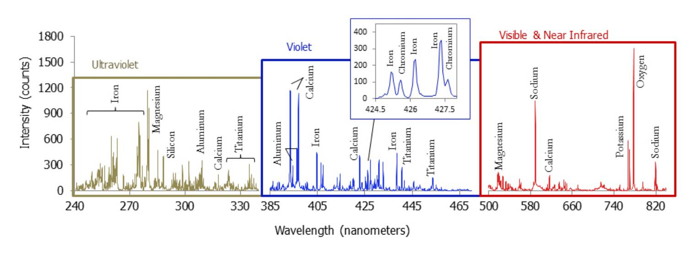

Proximity in Data Space
Hold on Sep 29, 2023
Agenda
- Check-in
- Discuss Detection methology
- Picking Distance Function
Check-in List
- TA: Amy
- Anne
- Barbara
- Dyne
- Luke
Meeting Record

Mars Curiosity Rover: the ChemCam instrument
ChemCam has the ability to record up to 6,144 different wavelengths of
ultraviolet, visible, and infrared light. Detection of the ball of luminous
plasma is done in the visible, near-UV and near-infrared ranges, between 240
nm and 800 nm. The first initial laser testing of the ChemCam by Curiosity
on Mars was performed on a rock, N165 ("Coronation" rock), near Bradbury
Landing on August 19, 2012.
- Laser-induced breakdown spectroscopy (LIBS)
- Gives detailed information about chemical composition of rock